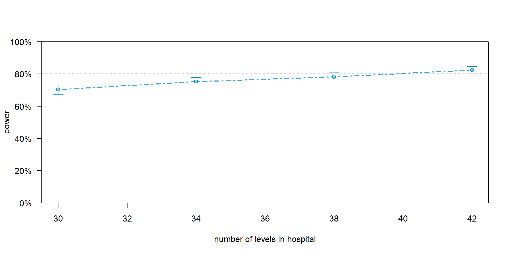
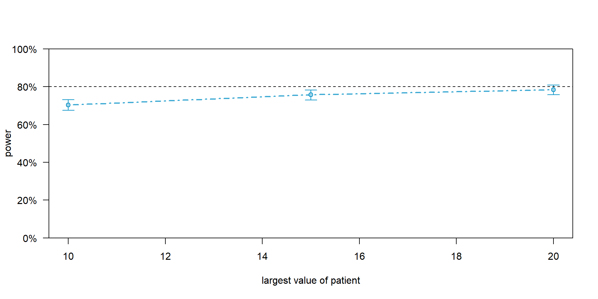

library(tidyverse)
library(simr)
planned_data <-
expand_grid(
hospital = 1:30, # 30 hospitals (Level 2)
patient = 1:10 # 10 patients per hospital (Level 1)
) |>
mutate(
# Assign the first half to treatment and second half to control
treatment = if_else(hospital <= 15, true = 1, false = 0),
hospital = factor(hospital)
)Multilevel Modeling
Power Analysis
Spring 2026 | CLAS | PSYC 894
Jeffrey M. Girard | Lecture 14b

Roadmap
- The Power Problem in MLMs
- Why G*Power isn’t enough
- The simulation solution
- The
simrWorkflow- Building dummy models
- Simulating and extending power
The Power Problem
What is Statistical Power?
- Power is the probability of correctly rejecting a false null hypothesis.
- In simpler terms: If a true effect exists in the real world, what are the chances your study will actually find it?
- The standard benchmark in psychology is 80% power.
- Power depends heavily on sample size, effect size, and your chosen alpha level (usually .05).
The Limits of Traditional Tools
- Many of you have used programs like G*Power for simple regressions or ANOVAs.
- These tools use closed-form mathematical equations to calculate exact sample size needs.
- The Problem: MLMs are too complex for these simple equations.
- In an MLM, power is not just about the total number of people. It depends on the number of clusters, the number of observations per cluster, the ICC, and the variance of your random slopes.
The Two Dimensions of N
- If you want to increase your power in an MLM, you have two choices:
- Add more Level-1 observations (e.g., recruit more patients per hospital).
- Add more Level-2 clusters (e.g., recruit more hospitals).
- These two choices do not increase power equally.
- The most effective strategy depends entirely on the level at which your focal predictor is measured.
The Simulation Solution
If we cannot use a simple equation to calculate power, we simulate.
The Logic of Simulation:
- We invent a hypothetical “true” effect size.
- We generate a fake dataset that mimics our planned study structure.
- We run our planned MLM on this fake data and check the p-value.
- We repeat this process 1,000 times.
- If 850 of those models yield a significant p-value, our power is 85%.
Introduction to simr
The simr Package
- {simr} is an R package designed specifically to automate power simulations for generalized linear mixed models.
- It is highly flexible and allows you to test power for fixed effects, random effects, and interactions.
- One important note:
simrwas built to work with thelme4package. - While we used
glmmTMBin previous lectures, we will need to uselme4syntax (likelmer()andglmer()) for our simulations today. The math is identical for our purposes.
The Workflow Template
We are going to learn a highly adaptable template that you can reuse for your own research. It involves four main steps:
- Design the Data: Create a grid of your planned sample sizes.
- Set the Parameters: Define your expected effect sizes and variances.
- Build the Dummy Model: Assemble the data and parameters into an artificial model object.
- Run the Simulation: Test the power and adjust your sample sizes until you reach 80%.
Building the
Dummy Model
Step 1: Design the Data
Let us imagine we are planning a cluster-randomized trial. We want to test a new training program for nurses across 30 hospitals. We plan to survey 10 patients per hospital. We start by creating our planned data structure.
Viewing the Planned Data
We now have an empty shell of a dataset with 300 rows. It contains our clustering structure and our predictors, but no outcome variable yet.
Step 2: Set the Fixed Effects
Next, we tell simr what we believe the “true” effect sizes are. These are our Betas (fixed effects). We need a value for the Intercept and a value for our treatment slope.
Tip: Where do these numbers come from? You should pull them from pilot data, previous literature, or by defining the smallest effect size of clinical interest.
Step 3: Set the Random Effects
- Now we define our variance components. How much do the hospital baselines differ from one another? We provide the variance for our random intercepts.
- Finally, we must define the Level-1 residual variance. How much do patients within the same hospital differ from one another?
(Note: An intercept variance of 0.5 and a residual variance of 2.0 gives us an ICC of 0.20, which is very typical for organizational data).
Step 4: Assemble the Model
We now use the makeLmer() function from {simr} to smash all these pieces together. We provide a model formula, our fixed effects, our random effects, and our residual variance.
Running the Simulation
A Single Power Test
Now we ask the critical question: With 30 hospitals and 10 patients per hospital, do we have enough power to detect our 0.8 point treatment effect?
Power for predictor 'treatment', (95% confidence interval):
71.30% (68.39, 74.09)
Test: Kenward Roger (package pbkrtest)
Effect size for treatment is 0.80
Based on 1000 simulations, (0 errors, 0 warnings, 1 message)
Time elapsed: 0 h 1 m 22 s- The result is 71.3% power, 95% CI: (68.4, 74.1). We are underpowered!
How to Fix Underpowered Studies
We have two options to reach 80% power:
- Increase the number of patients per hospital.
- Increase the number of hospitals.
Instead of guessing and re-running the simulation manually, {simr} allows us to “extend” our dummy model and test a range of sample sizes automatically.
Step 5: Extending L2 (Hospitals)
Let us first see what happens if we increase our study to 40 hospitals. We use the extend() function to add more hospitals.
This automatically generates new hospital IDs and populates them with the correct ratio of patients and treatments, maintaining our data structure.
Step 6: The L2 Power Curve
Now we use powerCurve() to test a sequence of hospital sample sizes.
Let us test power at 30, 34, 38, 42 hospitals.
Interpreting the L2 Power Curve
Power for predictor 'treatment', (95% confidence interval),
by number of levels in hospital:
30: 70.30% (67.36, 73.12) - 300 rows
34: 75.20% (72.40, 77.85) - 340 rows
38: 78.20% (75.51, 80.72) - 380 rows
42: 82.50% (80.00, 84.81) - 420 rows
(0 errors, 1 warning, 0 messages)
Time elapsed: 0 h 4 m 2 sWe can now see exactly when we cross the 80% threshold.
We need at least 42 hospitals to do so (at 10 patients each).
Plotting the L2 Power Curve

Step 7: Extending L1 (Patients)
What if we cannot recruit more hospitals? Let us see what happens if we keep our study at 30 hospitals, but try to recruit more patients per hospital instead.
We use extend() again, but we change the along argument to target our Level-1 ID.
Step 8: The L1 Power Curve
We test this new extended model across a sequence of patient sample sizes. Let us test power at 10, 15, and 20 patients per hospital.
Interpreting the L1 Power Curve
Power for predictor 'treatment', (95% confidence interval),
by largest value of patient:
10: 70.40% (67.46, 73.22) - 300 rows
15: 75.70% (72.92, 78.33) - 450 rows
20: 78.40% (75.72, 80.91) - 600 rows
(0 errors, 1 warning, 0 messages)
Time elapsed: 0 h 3 m 17 sNotice the diminishing returns. Even with 20 patients per hospital, our power is only about 78%. At 30 hospitals, we never reach 80%.
Plotting the L1 Power Curve

The Lesson: Match the Level
Why did adding hospitals work, but adding patients failed?
- Level-2 Predictors: Our
treatmentvariable is assigned at the hospital level. Because we are testing a difference between clusters, we must add more clusters to increase our statistical power for that effect. - Level-1 Predictors: If we were testing a Level-1 predictor (e.g., randomizing patients to treatments within the same hospital), then adding patients would have been highly effective.
Takeaway: Adding observations always increases power the most when added at the level of the predictor you are testing. For cluster-randomized trials, L2 always beats L1.
Sensitivity Analysis
Beyond Sample Size
- We have spent all our time manipulating sample size (\(N\)) to reach 80% power.
- However, power is equally dependent on the effect size.
- In Step 2, we assumed our treatment would increase satisfaction by 0.8 points.
- What if previous literature was overly optimistic? What if the true effect is only 0.5 points?
- We need to conduct a sensitivity analysis to see how our power holds up if the effect is smaller than expected.
Modifying the Dummy Model
We do not have to rebuild our entire dataset and model from scratch. We can modify the fixed effects of our existing dummy_model directly using the fixef() function.
Re-Testing Power
Now we can re-run our power simulation on the modified model. Let us see what happens to our power (at 30 hospitals and 10 patients) when the effect size shrinks.
Power for predictor 'treatment', (95% confidence interval):
34.90% (31.94, 37.95)
Test: Kenward Roger (package pbkrtest)
Effect size for treatment is 0.50
Based on 1000 simulations, (0 errors, 0 warnings, 0 messages)
Time elapsed: 0 h 1 m 24 sThe Value of Sensitivity
- By dropping the effect size from 0.8 to 0.5, our power plummeted from 71% to roughly 35%.
- The Takeaway: When writing a grant or a pre-registration, it is highly recommended to report power across a range of plausible effect sizes.
- It proves to reviewers that you understand the uncertainty in your assumptions and have planned accordingly.
Practical Tips
Start Small
- Power simulations are computationally heavy.
- When you are writing your code and testing to see if things work, keep
nsimlow (e.g., 10 or 50). - Once you are sure your code is error-free and your model is specified correctly, increase
nsimto 1000 for your final, official power estimate. - Run the 1000-simulation version before you go to bed and let your computer work overnight.
Where to get the parameters?
The hardest part of simulation is knowing what numbers to plug in.
- Pilot Data: The absolute best source. Fit an MLM to a small pilot sample and use those fixed effects and variances as your parameters.
- Literature Review: Find a similar study and extract their effect sizes, variances, and ICCs.
- The “Smallest Meaningful” Approach: If no data exists, ask yourself: “What is the smallest effect size that would actually matter in the real world?” Power your study to detect that.
Be Pessimistic
- Simulations assume perfect conditions: perfect reliability, no missing data, and perfect compliance.
- The real world is messy.
- If your simulation says you need 25 clusters to achieve 80% power, you should aim to recruit 28 to 30 clusters.
- Always build a buffer into your sample size justifications to account for attrition and messy data.
Handling Unbalanced Data
- In our example, we used
expand_grid()to create a perfectly balanced design (exactly 10 patients per hospital). - Real-world data is rarely this clean. You might have 5 patients in one hospital and 40 in another.
- The {simr} package handles unbalanced data seamlessly.
- You simply construct your
planned_datadata frame to reflect the unequal group sizes you realistically expect to collect. ThemakeLmer()function will adapt perfectly to whatever structure you provide.